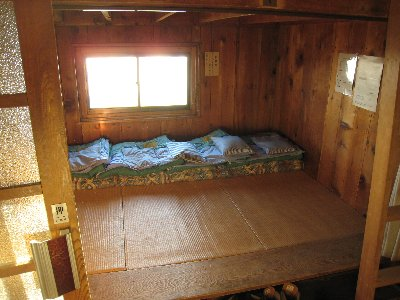
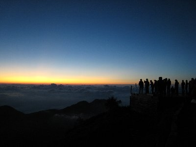
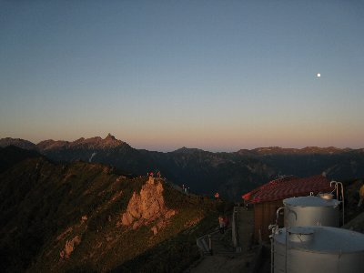
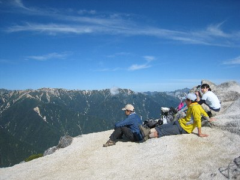

燕岳登山 | 2009年9月 幹事：べっしー |
|---|---|
| 燕岳って知ってます？ まず、何て読むか分ります？ 普通に読んで「つばくろだけ」と読みます。 燕岳は北アルプスの中程に位置する、とっても綺麗な山として知られています。燕山荘まで4時間、そこから山頂まで30分（標準タイム）と比較的登り易い山と言えます。だから中高年に人気があるんです。ただし、標高差は1300mありますのでハイキング気分で行くと大変ですよ。あくまで登山です。因みに北アルプス三大急登の一つって言われてます。 9月初旬の土日で、Ryuuさん・Yottaさん・はちさん・私の4名でトライしました。4時間位で登れるとあって、早朝に静岡を出発し、11時に中房から登山開始です。（ちょっと舐めてる行程ですね） 登り口は晴れていたのですが、山頂方面は雲が掛かってます。 | |
 途中のベンチで休憩 |  霧がかっているけど花は綺麗です |
| 4時間で標高差1300ｍ近くを登るだけあって、いきなり階段や急登の連続です。さすが三大急登。30分ごとにあるベンチで休憩を取りながら、ほぼ予定通り（15時）に燕山荘に到着。雲の中でした。燕岳も雲の合間から見えたり見えなかったりなので、山頂登頂は明日にして、本日は終了〜 ビールタイム♪ さて、ここの名物とも言えるのが、この燕山荘です。「えんざんそう」と読みます。「泊まって良かった山小屋」等で1位になるなど、綺麗な山荘です。人気の山なので登る人も多いのですが、山荘は600名泊まれるので余裕があります。しかも、壁で細か区切られていて４〜６名単位で一区切りです。値段は一泊二食で9500円と、他の山荘と比べると若干高めではありますが、十分価値があります。 食事も朝・晩とも手の入った食事が頂けます。スタッフも気持ちの良い対応で素晴らしいですね。夕食後に、オーナーによる山の話とアルペンホルンの音色を聞くことが出来ます。山の話は「自然を大事にしましょう」って話がメインですが、結構面白いし、ためになります。アルペンホルンは、「こんな音がするんだ」程度ですが、聞いて損はありません。 | |
 燕岳をバックにビールタイム（真ん中にちょこっと） |  山荘はこんな感じで区切られています |
| 翌朝、5:20頃の日の出でしたが、さすがに標高2700ｍは寒い。防寒着必需品です。手袋も欲しかった。寒いけど眼下に雲海を望む快晴で、燕岳から槍ヶ岳、西の山々の上には月まで輝いて素晴らしい景色でした。 今回は朝食後ゆっくりと支度して、7時出発。燕岳までは30分♪ | |
|  山荘からの朝 |  右手の白いのは月。左手の尖っているのが槍 |
| この登山道が花崗岩なので、白くてとっても綺麗です。所々に岩がそびえていて、これが動物の形に見えるとかあるで、探してみるのもいいでしょう。 燕岳は綺麗というか美しいです。白い岩肌、緑の化粧、蒼い空。所々にピンクのコマクサが咲いていて、女王の風格をかもし出していました。 燕岳（2763ｍ）からは360度の景色が見えます。残念ながら東方面は雲があったため見渡せませんでしたが、メインの南・西・北方面、いわゆる北アルプスの山々は綺麗に見えました。いや〜、ほんと天気が良いと気持ち良いな〜 槍ヶ岳は本当に尖って痛そうに見えるし、何とも言えない開放感と達成感で気分は最高です！ | |
 さあ、燕岳へ |  稜線に立つ燕山荘 |
| ついでとばかりに、北燕岳（20分程度）まで足を伸ばし、そこの山頂でコーヒータイム。北燕岳も綺麗な山ですが、人はあまり来ないし、山頂は広めなので、ゆったり出来ます。ここ穴場ですね。（ちなみに、燕岳山頂は狭いのでゆっくりは出来ません） ゆっくり、マッタリとコーヒーとお菓子を頂き、北アルプスを眺めながら休憩。 よく人に「なんで山に登るの？大変じゃん。何しに行くの」と言われますが、こんな時間が欲しくて登るのかな〜。一回登ってみて、この時間を体験して欲しいですね。 名残惜しくも、帰る時間となりました。この山々を見ることが出来るのは、次はいつだろう。と感慨深く下山。 | |
 燕岳から北燕岳 |  北燕岳でコーヒータイム |
| あ、忘れていましたが燕山荘から下ること40分程の所に合戦小屋があります。宿泊は出来ないけど、軽食や飲み物、そしてスイカを頂けます。スイカは１カット800円ですが結構な人気です。登ってくる時に食べると、血がドロドロにならなくて良いそうです。 時間は掛かっても、ゆっくりの行程なら初心者でも行ける山なので、アルプス系登山初心者でもチャレンジしてみてはいかがでしょう。本当の初心者は、誰かに連れて行ってもらってください。 しかし、1300ｍの下りは結構足にきます。 補足（行った人にしか分からない） 開かずのチャック→商品交換となりました。お店の人でさえ「はじめて見た」と。 | |
| 写真＆コメント ｂｙ べっしー | |